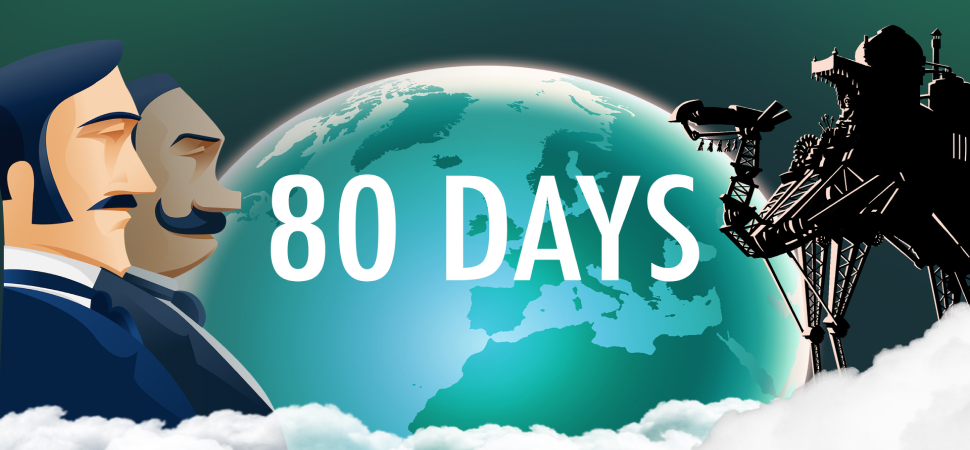
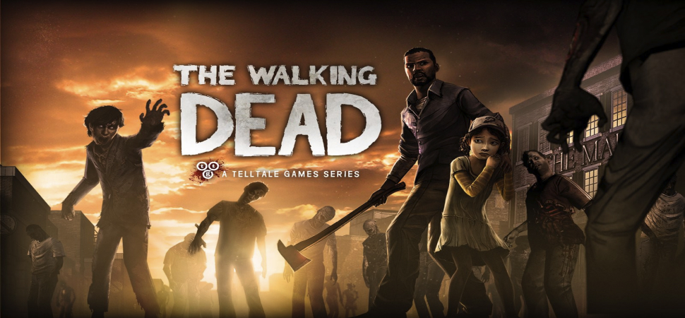
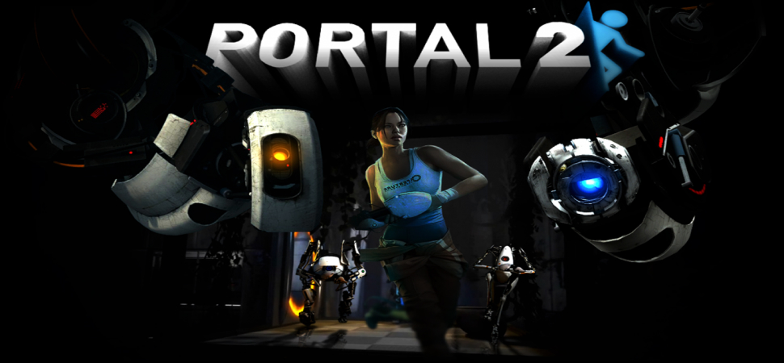
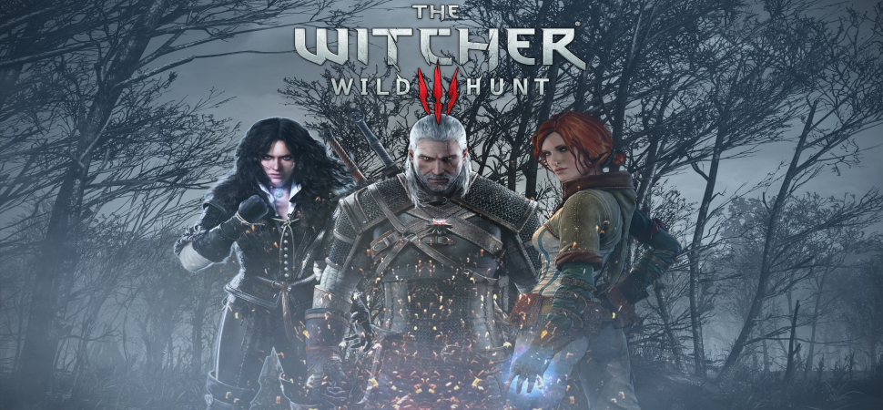
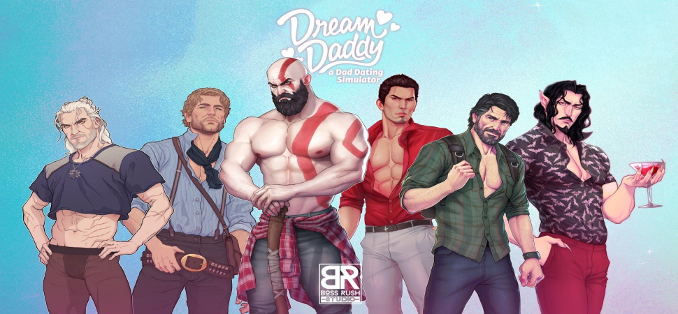

 Текстовые квесты 80 Days является лучшей игрой в жанре Текстовые квесты благодаря увлекательному и глубокому повествованию, разветвленным сюжетным линиям, сложным выборам и последствиям, множеству путей и подходов к достижению цели, проработанному персонажу и атмосфере путешествий, которая полностью погружает игрока в уникальный мир игры.
 Графические квесты The Walking Dead является лучшей игрой в жанре Графические квесты благодаря увлекательному и захватывающему сюжету, эмоциональным персонажам, сложным моральным выборам, влияющим на ход событий, кинематографичной подаче и отличному стилю визуального исполнения, создающему атмосферу ужаса и выживания.
 Головоломки Portal 2 является лучшей игрой в жанре Головоломки из-за инновационного геймплея, умных и оригинальных головоломок, отличного дизайна уровней, смешного и харизматичного персонажа Глейдос, захватывающего сюжета и прекрасного исполнения, создающего уникальный игровой опыт для игроков.
 Экшн-адвенчуры The Witcher 3: Wild Hunt является лучшей игрой в жанре Экшн-адвенчуры благодаря захватывающему открытому миру, великолепному сюжету, интересным персонажам, моральным выборам и их последствиям, динамичным боям, обширной системе развития персонажа, красивой графике и атмосфере, которая погружает игрока в фэнтезийный мир Ведьмака.
 Симулятор свиданий Dream Daddy является лучшей игрой в жанре Симулятор свиданий благодаря оригинальной концепции, качественному исполнению персонажей, интересным и разнообразным сюжетным линиям, юмору и эмоциональной глубине, а также вниманию к деталям и возможности создавать индивидуальные отношения с персонажами, делая игровой опыт уникальным для каждого игрока.